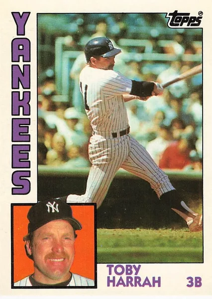

Toby Harrah
Career Highlights & Facts
(Facts are AI-generated and may require verification)
- Holds the distinction of being the final batter for a defunct professional club in its last game.
- Achieved the rare feat of playing both games of a doubleheader at shortstop without recording a single defensive chance.
- Participated in a major-league record-tying performance by being one of three players to hit a grand slam in the same game.
Would you like to find out more about Toby Harrah?
Player Biography
Toby Harrah January 4, 2012 / in BioProject - Person 1970s All-Stars , 1980s All-Stars Managers 1972 Texas Rangers / by admin Frederick C. Bush Who was the last player to bat for the Washington Senators in the franchise’s final game and also the last active player from that team? Who played both complete games of a doubleheader at shortstop without handling a single chance? Who became one-half of the first set of American League teammates – and only the second duo in major-league history – to hit back-to-back inside-the-park home runs? Who was one of the three players who combined to hit a major-league-record three grand slams in one game? The answer to all of these questions is Toby Harrah, a former infielder for the Senators/Texas Rangers, Cleveland Indians, and New York Yankees. In addition to being in the right place at odd times, Harrah also developed a reputation as a practical joker over the course of his career. He once sneaked up behind Rangers teammate and future Hall of Famer Gaylord Perry and sprinkled itching powder on his neck and shoulders between innings. Outfielder Tom Grieve recalled, “So when Gaylord goes back out to the mound, he’s going through all these fake spitball maneuvers that he does and he’s itching the back of his head uncontrollably while he’s out on the mound. And everybody was just dying laughing at it.” 1 On another occasion, Harrah used a razor blade to cut several of the stitches in the seat of first baseman Mike Hargrove’s pants, so that they split as he was boarding the team bus. On this occasion, the hilarity ended abruptly as Harrah had to confess his misdeed when Hargrove was prepared to punch out an innocent teammate whom he suspected of pulling the prank. 2 It would be wrong, however, to consider Harrah – whose surname is arguably the best-known palindrome in baseball history – to be little more than a walking trivia answer and merry prankster. He is also, according to sabermetrician Jay Jaffe’s WAR Score system (JAWS), the 25th best third baseman in major-league history as of 2016. 3 Although Harrah has not received as much recognition as might be expected from a top-25 ranking, he is appreciated in Arlington, Texas, and Cleveland, the locales where he spent the majority of his career. Toby Harrah, one of nine children born to Burton and Glenna Harrah, entered the world on October 26, 1948, in Sissonville, West Virginia. Harrah’s given name is Colbert Dale, but he explained, “My grandmother didn’t like it and nicknamed me Toby, and I’ve been Toby ever since.” 4 Burton Harrah had begun working in West Virginia’s coal mines at the age of 12, but he moved his family to La Rue, Ohio, about 140 miles southwest of Cleveland, where he found work in the nearby industrial town of Marion. According to Toby, La Rue “was so small the phone book only had one Yellow Page.” 5 Harrah lettered in four sports – baseball, basketball, football, and track – at Marion’s Elgin High School, and he soon gained the attention of major-league scouts for his play at second base. In spite of the interest in Harrah, he was not signed upon graduation because he had been offered a football scholarship to Ohio Northern University and the scouts all assumed that he would play college ball. 6 Scout extraordinaire Tony Lucadello checked in on Harrah in the late fall and, when he found out that Harrah was not attending college, signed him to the Philadelphia Phillies on December 27, 1966. 7 Harrah was uncertain about his desire to play baseball, saying, “My high-school coach told me, ‘Go down there spring training and give it all you’ve got for one month and, if after that you want to come home, come home.’” 8 Harrah went, and his first spring training led to a 17-year career in the major leagues. Harrah spent the 1967 season with the Class-A (short-season) Huron Phillies of the Northern League, where he played primarily at second base but also saw some time at shortstop. He batted only .256 but had a .394 on-base percentage thanks to a high rate of bases on balls. The good eye that Harrah demonstrated at the plate as an 18-year-old would remain one of his greatest assets, resulting in 1,153 walks over the course of his major-league career and only 868 strikeouts. The Washington Senators saw enough potential in Harrah that they snatched him away from the Phillies in the minor-league draft on November 28, 1967. The Senators intended Harrah to be their shortstop of the future, and that is where he started 132 of the 135 games in which he played for Class-A Burlington in the Carolina League in 1968. In 1969, he batted .306 in 46 games for Burlington, advanced to Double-A Savannah, and had an eight-game cup of coffee with the Senators. After one more year in the minors with the Double-A Pittsfield Senators in 1970, Harrah became Washington’s starting shortstop in 1971 at the youthful age of 22. Ted Williams was the Senators’ manager. He had a reputation for not wanting to have rookie players on his team, and Harrah knew he faced a challenge, saying, “I know I must show a lot of improvement, but I think I can do it.” 9 On April 5, 1971, the Senators opened their season at home with an 8-0 victory over the Oakland Athletics. Harrah, who according to Williams was “in there as tight as a drum,” batted in the leadoff spot and finished 2-for-4 with a walk and two runs scored. 10 It was a great season opener for both the Senators and for Harrah, whose father, Burton, and fiancée Pamela Mohr were both in attendance. After the game, Williams asserted, “We will go as far as our young shortstop takes us.” 11 On April 7, a mere two days after Harrah’s Opening Day exploits, Harrah and Pam were married. They had two children together, son Toby in 1974 and daughter Haley in 1978, but their marriage ended in divorce in September 1979. Williams placed a great burden on Harrah since the 1971 Senators team was as woeful as the previous 10 squads of this second Washington franchise had been. They finished 63-96 and avoided last place in the American League East only because of the Cleveland Indians’ 60-102 mark. Years after his career ended, Harrah credited Williams for aiding his development as a player, asserting, “Well, he was the best hitter I ever saw in my life, and he made me a better hitter.” 12 The results of Williams’ teaching were not immediately evident, however, as Harrah batted .230 in 1971. He had yet to flash the combination of power and speed for which he would become known as the decade progressed. Harrah spent only one season in Washington. Senators owner Bob Short packed up his franchise and moved it to Arlington, Texas, a city between Dallas and Fort Worth, in time for the 1972 season with the team renamed the Rangers. Perhaps the most noteworthy moment of Harrah’s short tenure in the nation’s capital occurred on September 30, 1971, at Washington’s Robert F. Kennedy Stadium, in the season’s final game. The Senators had already scored two runs in the bottom of the eighth inning to take a 7-5 lead against the New York Yankees before Harrah came to bat with two outs and teammate Tommy McCraw on first base. McCraw was thrown out at second on a steal attempt, which resulted in the first of several oddities in Harrah’s career: Though he was the Senators’ last batter, Harrah did not receive credit for an at-bat or even a plate appearance. Washington fans were unhappy that the franchise was leaving and, with two outs in the top of the ninth, they decided to give Short and his team what they considered to be a fitting sendoff. They stormed the field in such numbers and began to vandalize it with such force that, in order to ensure the players’ safety, the umpires declared the game a forfeit to the visiting Yankees so that both teams could exit the field quickly. After the fans had helped the Senators snatch one final defeat from the jaws of victory, it was off to Texas for Harrah and the rest of the team. A new city and a new name did not lead to an improvement in the standings for the same old cast of characters. The 1972 Texas Rangers stumbled to a 54-100 record and a last-place finish in the AL West under Williams, in the first major-league season ever to be shortened by labor unrest between the players and owners. Though the team floundered, Harrah’s play improved, and he was chosen as an AL All-Star Game reserve at shortstop. He missed out on his chance to play in the July 25 midsummer classic because of a shoulder injury he suffered in a game against the Indians shortly before the game. The injury limited Harrah to 116 games in what might otherwise have become his breakout season, but he still finished with a .259 batting average, 29 points higher than he had hit the previous year. Williams, unhappy with the Texas heat and the Rangers’ losing brand of baseball, retired after the 1972 season, and Whitey Herzog became the new manager. Herzog did not inherit a talented roster – Harrah and outfielder Jeff Burroughs were the only players he thought had All-Star futures – and the Rangers actually fared worse in 1973, finishing in last place again with a 57-105 record. 13 Harrah made great strides after playing winter ball in Venezuela for the second consecutive year to hone his defensive skills, which had been his shortcoming. He credited his Zulia (Venezuela) Eagles teammate Cookie Rojas (the Kansas City Royals’ second baseman) for helping to bring about vast improvement in his glove work. Rangers catcher Rich Billings , who had managed the Zulia squad, enthused, “He was just sensational down there. Toby might be developing into the best shortstop in the American League. I’ve never seen anyone improve as much as he has.” 14 While Harrah was being lauded for the strides he had made on defense, he started slowly with the bat in 1973. Then, on June 23 against the Royals in Kansas City, he caught fire against lefty Paul Splittorff . Harrah was 3-for-3, including a double and a home run, and walked twice. His homer tied the game at 4-4 in the top of the ninth inning and chased Splittorff from the game. The Rangers took a 7-4 lead, but the Royals stormed back in the bottom of the ninth to win the game, 8-7. One great game normally does not make or break a player’s season; however, in this case it did, though it was not the kind of break Harrah would have liked. The next time he faced Splittorff – in Arlington on July 1 – the pitcher intended to send a message to Harrah that he would not be embarrassed again. Splittorff aimed a fastball at Harrah’s chin, which resulted in a break in the left hand that he raised to protect himself. It was Harrah’s second consecutive season to be interrupted by an injury, but he handled it in stride and quipped, “Better a broken hand than a broken face.” 15 Harrah finished 1973 with a .260 batting average, 10 home runs, and 50 RBIs. Herzog did not finish the season as the Rangers’ manager. He was fired after a 14-0 loss to the Chicago White Sox on September 4 left the Rangers with a 47-91 record. The Rangers fell under the managerial leadership of Billy Martin , who was already building a résumé that was composed of equal parts fame and infamy. Harrah, who lauded Williams as the best hitter he had ever seen, was equally effusive in his praise for Martin, avowing, “He was the best manager I ever played for, because he made baseball fun.” 16 In Texas, as was the case in most of Martin’s other managerial stops, that was true for all of one season. In 1974, the Rangers had a new owner in Brad Corbett, a full season of new manager Billy Martin, and a suddenly competitive team that was aptly dubbed “The Turnaround Gang” in the team’s preseason media publication. 17 Martin worked his momentary magic, and the Rangers pushed the two-time defending champion Oakland Athletics for the majority of the season and posted an 84-76 record, but they had to settle for finishing in second place, five games behind the A’s. Stars were born, or reborn, across the Rangers’ roster. Future Hall of Famer Fergie Jenkins , who had been acquired in a trade with the Chicago Cubs in October 1973, won 25 games and the AL Comeback Player of the Year Award. Jeff Burroughs batted .301 with 25 home runs and 118 RBIs to earn the AL Most Valuable Player Award. Mike Hargrove finished the season with a .323 batting average and 66 RBIs to win the AL Rookie of the Year Award. As for Harrah, he played in every game in 1974 and again batted .260 while more than doubling his home-run total to 21 and driving in 74 runs. Harrah’s increased offensive output was a welcome improvement that did not go unnoticed. Prior to the 1975 season, one Dallas reporter wrote: The old Toby Harrah used to choke way up on his bat and slash singles all over the outfield; when former owner Bob Short used to pronounce his last name “hurrah,” Toby, the singles hitter, just cringed and went along. The new Toby Harrah hits home runs and the park announcer rolls out the last name just the way Toby likes it. 18 Harrah attributed his newfound power to a change in his approach at the plate in which he opened up his stance to become more of a pull hitter. He explained, “I got to thinking that if I’m only going to hit .260 or so, I might as well hit with more power. So now I have confidence in myself as an extra-base hitter.” 19 He also credited encouragement from Martin, explaining, “Billy felt I could be a home-run hitter for him and he urged me to be aggressive at the plate and take my best cut every time.” 20 The Rangers looked primed to field a competitive team filled with All-Stars for years to come. However, as was ever the case with Martin, his petulance and controversial persona affected his team and ended in his dismissal. Harrah defended Martin, claiming: He loved the turmoil, he liked the chaos. That was just the way it was with Billy. He kept things stirred up all the time, which kept the attention off of us. That made it a lot easier to play, because there was enough pressure on us young players as it was. 21 Owner Brad Corbett, on the other hand, did not appreciate the bedlam that surrounded his team in 1975, and he fired Martin after 95 games; at the time, the Rangers were 44-51 and were mired in fourth place in the AL West, 15½ games behind the A’s. Third-base coach Frank Lucchesi became the new manager and guided the Rangers to a 35-32 record the rest of the way. The only Rangers player to improve his performance in 1975 was Harrah, who finally had his breakout season. He batted .293 with 20 homers and 93 RBIs, scored 81 runs, stole 23 bases, and drew 98 walks. He was selected as an All-Star Game reserve for the second time, though he was not inserted into the game by AL manager Alvin Dark of the Oakland A’s, and he finished 15th in the AL MVP vote after the season. Prior to 1976, Harrah signed a three-year escalated contract that would pay him $100,000 for the first year, making him and the Phillies’ Larry Bowa the only two shortstops to be paid six-figure salaries. 22 In addition to the new contract, Harrah was inserted into a new place in the batting order. Lucchesi often used Harrah in the cleanup spot, which made him an anomaly in the 1970s when weak-hitting shortstops like the Baltimore Orioles’ Mark Belanger and the Detroit Tigers’ Tom Veryzer were the norm in the AL. 23 On June 25, Harrah constituted a one-man wrecking crew in a doubleheader against the White Sox in Arlington. In the first game, an 8-4 Rangers’ victory, he went 3-for-5 with a home run and five RBIs. He followed that with a 3-for-3 performance that included another homer, three RBIs, and two walks in a 14-9 loss in the nightcap. Harrah may have been fresh and aggressive at the plate due to the fact that he was completely inactive in the field. Incredibly, although he played all nine innings of both games at shortstop, he did not get a single fielding chance. Though Harrah had not had the opportunity to demonstrate any fielding prowess in the doubleheader, his stellar play was noticed around the league. He was voted the AL’s starting shortstop in the 1976 All-Star Game; as a starter, he finally got to play in the actual game, though he went 0-for-2 at the plate. In spite of the All-Star honor, Harrah’s offensive numbers were down slightly in 1976 as he finished with a .260 batting average, 15 homers, and 67 RBIs. As a team, the Rangers struggled to a 76-86 record and a fourth-place finish. In November, Texas signed free-agent shortstop Bert Campaneris away from the Oakland A’s and informed Harrah that he was being moved to third base for the 1977 season. Harrah had resisted previous attempts to turn him into a third baseman, but this time he agreed to the switch, saying, “My move to third strengthened us in two infield positions – there and at shortstop – so obviously it has to be the right move.” 24 Whether or not Harrah truly believed the clichéd “it’s what’s best for the team” line applied to his move to third base, it actually held true this time. In spite of the fact that the 1977 Rangers went through a major-league record four managers during the season, they finished 94-68, which was the best record in franchise history to that point. 25 Their fine season went for naught, however, as they had the misfortune of being in the same division as the Kansas City Royals, who won the AL West with a 102-60 record. In the pre-wild-card era, there was no playoff opportunity for the Rangers. Harrah, while manning the hot corner, put up the best all-around offensive numbers of his career. His batting average was still in the .260s – .263, to be exact – but he hit 25 doubles and 27 home runs, drew an AL-leading 109 bases on balls, stole 27 bases in 32 attempts, and scored 90 runs. Harrah’s numbers were All-Star-worthy, but he was bypassed for the AL team as he was now playing the same position as stalwarts like the Royals’ George Brett and the Yankees’ Graig Nettles . 26 Though Harrah did not get to participate in the All-Star Game, he did take part in yet another odd moment that made baseball history. On August 27, in an 8-2 victory at New York, Harrah and second baseman Bump Wills hit back-to-back inside-the-park home runs against Yankees reliever Ken Clay in the seventh inning. It was the first time the feat had been accomplished in the AL and only the second time it had happened in major-league history. 27 Though Harrah had reason to dislike Kansas City, what with the Royals winning the division and Brett being voted the AL’s All-Star third baseman, it was there that he met the woman who became his second wife, Janet Beane. In 1978, while visiting Kansas City, Jan met a man who claimed to be Toby Harrah of the Texas Rangers, but she was unimpressed. One night after the encounter, Jan and her friends saw some Rangers players at a local watering hole. She told one of the players, “I met your third baseman last night,” only to be informed that the Rangers had not yet arrived in Kansas City on the previous evening. 28 Jan was then introduced to the genuine Toby Harrah; they struck up a romance and were married a year and a half later. In addition to meeting Jan, Harrah soon experienced another life-changing event, a trade. The Rangers had finished 87-75 in 1978, which had left them in a second-place tie with the California Angels, five games behind the division champion Royals. Not only was the season’s outcome disappointing, but Harrah’s batting average had dipped to .229 with 12 homers and 59 RBIs. Under Corbett’s ownership, the Rangers teams of the late 1970s and early 1980s seemed to have a revolving-door policy, and they often made baffling trades in which they simply swapped one star for another without any clear plan for improvement. The four-team trade that had sent pitcher Bert Blyleven to Pittsburgh in exchange for outfielder Al Oliver on December 8, 1977, had been a prime example of one such transaction. One year later to the day, Texas sent Harrah – the last holdover from the inaugural Rangers team – to the Cleveland Indians in exchange for third baseman Buddy Bell . The two players were similar in many ways, though Bell was considered to be the better defensive third baseman. The trade to Cleveland was a homecoming for Harrah. He recalled listening to Indians games on the radio as a child and believed the trade to be a dream that had come true. Harrah was happy that his family and old friends could now make regular trips to Cleveland to see him play. He also supposed, “And Buddy Bell was a pretty good player, so I must have been not that bad myself to get traded for Buddy Bell.” 29 Harrah’s dream did not quite turn into a nightmare, but the specter of Bell loomed over him during his time with the Indians as the Cleveland fans and media misdirected their animosity over the popular Bell’s departure toward him. Harrah has said, “I always felt that during my career in Cleveland, I was a much more complete player than I was in Texas.” 30 A comparison of Harrah’s numbers in Texas versus Cleveland confirms his belief, but it took four full seasons for him to be accepted as the player who replaced Bell. The change of scenery did not result in a change in the standings for Harrah. In fact, the Indians were reminiscent of the early-1970s Rangers teams on which he had played and dwelt in the cellar of the AL East. In the five years Harrah spent in Cleveland, the Indians finished in sixth place four times and seventh place once. In 1979, Harrah started slowly but recovered to finish the season with a .279 batting average, 20 homers, and 77 RBIs. He also stole 20 bases, making him and teammate Bobby Bonds (25 homers/34 steals) the first 20-homer/20-steal players in the Indians’ history. Cleveland finished 81-80 that season; however, in the tough AL East that was only good enough for sixth place, 22 games behind the first-place Orioles. Toward the end of Harrah’s first season in Cleveland, his divorce from Pam became final. He married Jan Beane on October 27, 1979, and she became a beacon of emotional stability for him amid the turmoil of his time in Cleveland. Though Toby and Jan were happy together, the transition in Harrah’s personal life created greater turmoil than any criticism he received at the hands of unhappy Clevelanders. Harrah gave evidence of Pam’s ongoing enmity toward him when, while discussing Jan in May 1982, he told a reporter, “That’s J-a-n. Don’t confuse her with Pam, my first wife, or Pam might sue me. She’s already sued me for everything else I have.” 31 In 1980, the Indians again finished in sixth place with a 79-81 record. Harrah hit .267, with 11 home runs and 72 RBIs, and scored 100 runs. He also played alongside his second AL Rookie of the Year teammate, “Super Joe” Charboneau , who became a sensation in Cleveland that year. Harrah has asserted that Charboneau is the most memorable of his Indians’ teammates: He made baseball fun. … He brought some interest to the Cleveland Indians, which they didn’t really have at that time. There were a lot of good ballplayers, but nobody really had that personality – somebody who was different, and was good, like Joe Charboneau. 32 Even Charboneau could not turn the Indians’ fortunes around, though; his star burned out after only one season due to back injuries he could not overcome. The Indians again hovered around .500 in the strike-shortened 1981 season, once more finishing in sixth place with a 52-51 record. Harrah’s batting average climbed to .291, but he hit only five home runs in 361 at-bats. The power outage was a result of injuries he had suffered when he fell off a ladder while painting his Fort Worth-area house on – this would be too odd to be believable with anyone else – Friday, February 13, 1981. Harrah injured his wrists, kneecaps, and elbows and, though the players’ strike gave him some time to recuperate, he had not fully regained his strength when the season resumed. 33 The injuries Harrah suffered in 1981 set the stage for a fantastic 1982 season. Harrah said of the turnaround, “After the season ended I tried to build myself up by swinging the lead bat – Ted Williams has always been real big on swinging the lead bat – and I started working out on the Nautilus a little. And I got stronger than I’d ever been.” 34 The 1982 season got off to a tense start, however, as Harrah finally had enough of the Cleveland media’s lingering love for the departed Bell. As fate and the major-league baseball schedule had it, the Indians opened the season with a two-game series against the Rangers. Harrah homered in the opener, but Bell homered twice in the Rangers’ 8-3 victory, and the Cleveland media focused on their former third baseman’s exploits. After Harrah went 3-for-4 with four RBIs in the Indians’ 13-1 clobbering of Texas the next day, Harrah groused to the press, “Buddy would have had six RBIs.” 35 Cleveland finished in sixth place for the fifth consecutive year, posting a 78-84 record in 1982. The team’s poor performance was by no means a reflection of Harrah’s efforts, though. Strengthened by his new offseason exercise regimen, Harrah played in all 162 games and batted a career-high .304 with 25 homers, 78 RBIs, and 100 runs scored. He earned the final All-Star berth of his career as he and Bell were picked to back up George Brett at third base for the AL. Though it seemed that Harrah could never escape Bell’s presence, his fantastic 1982 season finally won over the Cleveland faithful. After the 1982 season, on October 4, Harrah had surgery to correct a heart murmur as a preventive measure to avoid infections that his condition could have caused. 36 He emphasized the fact that the surgery was a minor procedure – it was not open-heart surgery – but he could not know that he had two greater trials in store for him. On February 19, 1983, a fire did more than $100,000 damage to his home and forced his family to live in a hotel for four months. The next day, Harrah had to sign autographs at a baseball card show in Dallas. When he returned to his hotel room, he received word that his father had been killed in a car accident earlier in the day. Jan Harrah described the shock of the dual tragedies: “Because of the fire, Toby did not have enough clothes or a suitcase to take to Marion. We had to go out and buy those things. After it happened, we were so busy that I don’t think there was time for it to sink in.” 37 In addition to the off-the-field hardships, Harrah missed a month of the season when he suffered the second broken hand of his career – courtesy of an errant pitch from the Orioles’ Dennis Martinez – in an early-April game. All of these factors contributed to a decline in Harrah’s performance – his batting line fell to .266-9-53 – and the team’s fortunes fell even further as the Tribe finished 1983 in seventh place with a 70-92 ledger. Harrah’s time in Cleveland came to an end when he agreed to waive his no-trade clause and was dealt to the Yankees on February 5, 1984. The Yankees had posted a 91-71 record in 1983, so Harrah and his new team both had playoff aspirations. He soon found out that he would not be a full-time starter for the Yankees, though, as he and Roy Smalley formed a platoon at third base. Harrah has said, “… Everybody should play for the Yankees for one year, because they have a great tradition,” but he seemed unhappy during his time in New York and his play reflected his frame of mind. 38 He batted only .217-1-26 in 88 games in 1984 while the Bronx Bombers’ record dropped to 87-75, which resulted in a third-place finish in the AL East. After one lost season in the Big Apple, the Yankees traded Harrah back to the Rangers on February 27, 1985. Texas fans were happy to see Harrah return, though they most likely thought that he would fulfill a backup role or be part of a platoon as he had been with the Yankees. In a surprise move, Harrah became the Rangers’ starting second baseman in 1985 and showed that, even at age 36, he still had one good season left in his tank. In 126 games, he batted .270-9-44 and drew a career-high 113 bases on balls; if sabermetrics had been around in 1985, Harrah’s .432 on-base percentage would have made him a highly prized commodity. Once again, however, his best efforts were to no avail as the Rangers finished in the basement of the AL West with a 62-99 record. Harrah returned in 1986, but Father Time finally caught up to him. He batted only .218-7-41 for a much-improved Rangers team that finished 87-75 and moved up five spots to second place, five games behind the Angels. In his final season, Harrah became part of yet one more historic moment. On August 6, in a 13-11 victory over the Orioles in Baltimore, Harrah went 5-for-5 with a double, a grand slam, and four RBIs. Harrah’s homer came in the second inning, and Baltimore teammates Larry Sheets and Jim Dwyer both hit slams in the fourth inning to set a record for most grand slams hit in a major-league game. 39 It was the last hurrah for Harrah as a player. During his 17-year career, Harrah never once got to participate in the playoffs. Nonetheless, he looked back on his career and said, “There are no regrets at all, man. … That’s playoffs just kind of icing on the cake. Just to get a bite of the cake. … I was pretty happy just with that.” 40 Although Harrah’s playing days were over, baseball continued to be his profession. In 1987, he was named the manager of the Oklahoma City 89ers, the Rangers’ Triple-A affiliate. Two years later, he became the Rangers’ first-base coach under Bobby Valentine , who had been his last manager as a player. The 1992 season brought new changes to Harrah’s job status: he moved from first-base coach to bench coach and then became the Rangers’ manager after Valentine was fired with 76 games left in the season. The Rangers went 32-44 under Harrah and finished in fourth place with a 77-85 record. Kevin Kennedy replaced him as the Rangers’ manager in 1993. After a two-year hiatus, Harrah rejoined the managerial ranks with the Triple-A Norfolk Tides, a New York Mets affiliate. He guided the Tides to an 86-56 record and a first-place finish in the International League’s West Division, for which he was named the league’s Manager of the Year for 1995. In 1996, Harrah became Cleveland’s third-base coach under his old Rangers and Indians teammate Mike Hargrove, where he replaced Buddy Bell, who had been named the Detroit Tigers manager. This time around, Harrah suffered no backlash from Clevelanders for stepping into a position that Bell had manned. Harrah spent the next 17 years plying his trade in various coaching capacities for numerous organizations, including the Detroit Tigers, Cincinnati Reds, Colorado Rockies (where he served as the bench coach from 2000-02 for manager Buddy Bell), and the independent Fort Worth Cats. His last position was as an assistant hitting coach with the Detroit Tigers from June 2012 through the end of the 2013 season. When Tigers manager Jim Leyland retired after 2013, Harrah learned that his contract would not be renewed because new manager Brad Ausmus was hand-picking his coaching staff. Harrah is often underrated as a player, but he has received numerous honors, especially in Texas. He was inducted into the Texas Baseball Hall of Fame in 1988 and into the Texas Rangers’ Hall of Fame in 2009; he was also named the 13th-best player in Rangers history in 2011 and the 41st-best player in Indians history in 2013. Additionally, a 2006 book published by Baseball Prospectus determined that Harrah was the second-best clutch hitter in the major leagues – behind only Mark Grace – from the period spanning 1972 to 2005. 41 Harrah expressed his love for the game of baseball in a 2009 interview, saying, “Baseball is a great game, man. I mean, we all have that little-bitty kid in us and it never leaves. I’m 60 years old and that little-bitty kid is still there. If I could start all over and do it again, I would.” 42 As of 2015, Toby and Jan lived in Azle, Texas, northwest of Fort Worth; they have two grown children, daughter Katie and son Thomas. Jan owned the Heirloom and Antique Shop in Azle, which she and Toby ran together. According to Harrah, small-town life suits him, and he enjoyed working in the antique shop, saying, “You never know what treasure is going to come through the door. Like baseball, it makes life fun and exciting.” 43 This biography was published in “ 1972 Texas Rangers: The Team that Couldn’t Hit ” (SABR, 2019), edited by Steve West and Bill Nowlin. Sources In addition to the sources provided in the Notes, the author also consulted the following: Crowe, Ryan. “21 Best Rangers Ever: Toby Harrah,” dfw.cbslocal.com/2011/07/01/21-best-rangers-ever-toby-harrah/ , accessed June 14, 2016. Lukeheart, Jason. “Top 100 Indians: #41 Toby Harrah,” letsgotribe.com/2013/8/1/4548584/top-100-indians-41-toby-harrah , accessed June 14, 2016. Markusen, Bruce. “Let Go by the Tigers, Toby Harrah Deserved Better,” , accessed June 14, 2016. State of Texas Vital Records. Notes 1 SportsDayDFW.com, “Rangers Announcer Tom Grieve Recalls Toby Harrah’s Itching-Powder Prank on Gaylord Perry: ‘Everybody on the Bench Is Just Dying Laughing,’” , accessed June 14, 2016. 2 John Woestendiek, “Last Men Out: Thirty-Four Years Later, Baseball and the Final Senators Game Still Resonate in the Lives of the Men In Washington’s Last Lineup,” articles.baltimoresun.com/2005-04-03/entertainment/0504020017_1_elliott-maddox-life-after-baseball-washington-senators/2 , accessed June 14, 2016. 3 Jay Jaffe’s WAR Score system (JAWS) is used to compare a player against other players at his position who are Hall of Famers. As of August 2016, Harrah was ranked 25th among all third basemen in major-league history; however, he could move higher or lower in the future, depending upon where currently-active third basemen are ranked after their playing careers have ended. For an explanation of how JAWS is measured, see baseball-reference.com/about/jaws.shtml . To view the current JAWS ranking for third basemen, see baseball-reference.com/leaders/jaws_3B.shtml . 4 Bruce Anderson, “Not Enough Hurrahs For Harrah: Toby Harrah Has Got Good Wood and Bad on the Ball, but Few Cheers in Cleveland,” .si.com/vault/1982/05/17/624073/not-enough-hurrahs-for-harrah , accessed July 28, 2016. 5 Joe Stroop, “The Other Third Baseman – Toby Harrah,” , shutdowninning.com/the-other-third-baseman-toby-harrah/ , accessed June 14, 2016. La Rue, Ohio has not grown since Harrah’s youth. The 2010 US Census determined the population of La Rue village to be approximately 747; see factfinder.census..xhtml?src=bkmk . 6 David L. Porter, ed., Biographical Dictionary of American Sports: Baseball, G-P , revised and expanded edition (Westport, Connecticut: Greenwood Press, 2000), 630. 7 Tony Lucadello (1912-1989) signed 50 players who eventually graduated to the major leagues, including Hall of Famers Fergie Jenkins and Mike Schmidt , 1974 NL Cy Young Award winner Mike Marshall , and 1970 AL batting champion Alex Johnson . On May 8, 1989, Lucadello committed suicide. There was speculation that he was distraught at the prospect of losing his job, but both Lucadello’s widow, Virginia, and the Phillies’ organization denied that he was in any such danger (See Articles.Philly.Com/1989-05-15/Sports/26111032_1_Scout-Police-Car-Tony-Lucadello ). 8 Anderson, “Not Enough Hurrahs for Harrah.” 9 Merrell Whittlesey, “Long-Shot Harrah Pays Off in Nats’ Shortstop Gamble,” The Sporting News , April 3, 1971: 35. 10 Merrell Whittlesey, “Nats’ Harrah Hears Cheers in Capital Debut,” The Sporting News , April 17, 1971: 5. 11 Ibid. 12 David Laurila, “Prospectus Q&A: Toby Harrah, Part 2,” baseballprospectus.com/article.php?articleid=8912 , accessed July 28, 2016. 13 Mike Shropshire, Seasons in Hell with Billy Martin, Whitey Herzog and “The Worst Baseball Team in History” – The 1973-1975 Texas Rangers (New York: Donald I. Fine Books, 1996), 21. 14 Randy Galloway, “Tip-Top Toby Receives Titanic Texas Hurrah,” The Sporting News , March 10, 1973: 41. 15 Shropshire, 73. 16 David Laurila, “Prospectus Q&A: Toby Harrah, Part One,” baseballprospectus.com/article.php?articleid=8905 , accessed June 14, 2016. 17 Shropshire, 181. 18 Tom Stephenson, “Ten Reasons Why the Texas Rangers Will Win the Pennant,” , accessed July 28, 2016. 19 Ibid. 20 Randy Galloway, “Rangers Cheer Homer Surge by Surprise Swatter Harrah,” The Sporting News , September 14, 1974: 10. 21 Laurila, “Prospectus Q&A: Toby Harrah, Part One.” 22 Randy Galloway, “Rangers Elevate Toby Harrah to Big Cash Class – $100,000,” The Sporting News , April 17, 1976: 9. 23 Bruce Markusen, “Card Corner: A Long Road to NY for Toby Harrah,” , accessed June 14, 2016. 24 Randy Galloway, “Campy’s Arrival Convinces Harrah to Switch to Third,” The Sporting News , March 26, 1977: 20. 25 Frank Lucchesi, the Rangers’ Opening Day manager, was fired after the team stumbled out of the gates to a 31-31 record. Texas lured Eddie Stanky out of retirement, but Stanky said he was homesick and quit after only one game; the Rangers won that game, leaving Stanky with a 1-0 record for Texas. Connie Ryan , a Rangers coach, then took over on an interim basis and amassed a 2-4 record before Billy Hunter took the reins on a permanent basis and led the team to a 60-33 record the rest of the way. For a complete breakdown of the 1977 Rangers season, see baseball-reference.com/teams/TEX/1977-schedule-scores.shtml . 26 Though Brett and Nettles had great seasons in 1977 and were worthy of being All-Stars, the choice of Oakland A’s rookie Wayne Gross over Harrah as the second reserve third baseman for the AL was questionable. Gross finished the 1977 season with a .233-22-63 batting line with 66 runs scored while Harrah’s line was .263-27-87 with 90 runs scored. 27 On June 23, 1946, Chicago Cubs left fielder Marv Rickert and first baseman Eddie Waitkus were the first to accomplish this feat, against New York Giants pitcher Nate Andrews . They hit their homers in the fourth inning of the first game of a doubleheader at New York’s Polo Grounds ; in spite of the historic event, the Cubs lost a slugfest to the Giants, 15-10. For the box score and play-by-play, see retrosheet.org/boxesetc/1946/B06231NY11946.htm . The true-life story of Waitkus, who was shot by a crazed female fan in 1949, provided part of the plotline for the character Roy Hobbs in Bernard Malamud’s 1952 novel The Natural and Robert Redford’s 1984 movie adaptation with the same title. 28 Woestendiek, “Last Men Out.” 29 Laurila, “Prospectus Q&A: Toby Harrah, Part One.” 30 Ibid. 31 Anderson, “Not Enough Hurrahs for Harrah.” 32 Laurila, “Prospectus Q&A: Toby Harrah, Part One.” 33 Anderson, “Not Enough Hurrahs for Harrah.” 34 Ibid. 35 Ibid. 36 Terry Pluto, “Harrah to Undergo Heart Surgery,” The Sporting News , October 11, 1982: 35. 37 Terry Pluto, “A Trying Winter for Tribe’s Harrah,” The Sporting News , March 7, 1983: 35. 38 Laurila, “Prospectus Q&A: Toby Harrah, Part One.” 39 Associated Press, “BASEBALL; 3 Slams Set Record for Game,” New York Times , August 7, 1986. 40 Ibid. 41 Nate Silver, “From Chapter 1-2: Is David Ortiz a Clutch Hitter?”, espn.com/espn/page2/story?page=betweenthenumbers/ortiz/060405 , accessed July 28, 2016. 42 Laurila, “Prospectus Q&A: Toby Harrah, Part 2.” 43 Joshua Adams, “Talkin’ with Toby Harrah,” issuu.com/azlenews/docs/heritage_mag_5_2015 , accessed July 28, 2016. Full Name Colbert Dale Harrah Born October 26, 1948 at Sissonville, WV (USA) Stats Baseball Reference Retrosheet If you can help us improve this player’s biography, contact us . Tags 1970s All-Stars · 1980s All-Stars · Managers · 1972 Texas Rangers Share this entry Share on Facebook Share on X Share on LinkedIn Share on Reddit Share by Mail
Career Totals
| WAR | AB | H | HR | BA | R | RBI | SB | OBP | SLG | OPS | OPS+ |
|---|---|---|---|---|---|---|---|---|---|---|---|
| 51.5 | 7402 | 1954 | 195 | .264 | 1115 | 918 | 238 | .365 | .395 | .760 | 114 |
Statistics via Baseball-Reference.com
The Original Clue